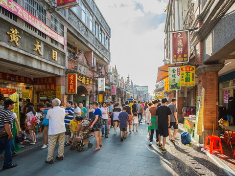
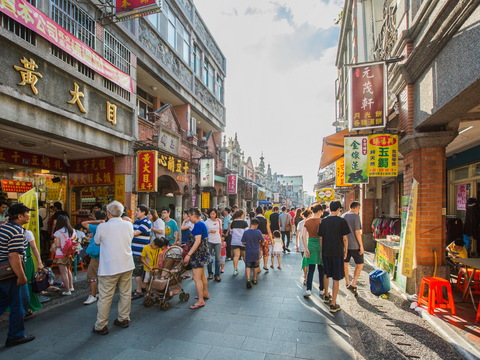

景點介紹-大溪老街
大溪是桃園最早發展的地方，透過大漢溪小帆船行駛淡水河，與大陸貿易興盛，造就了許多商號與商賈。日治大正時代流行巴洛克建築風格，和平路、中山路等老街，各商號融合巴洛克式繁飾主義和閩南傳統裝飾圖案，包括希臘山頭、羅馬柱子和中式的魚、蝙蝠等祈求吉慶的圖案混合，形成一種大溪專有的特色。和平老街因為開發較晚，老屋的保存狀況也較好，街上特色商店林立，十分熱鬧。
大溪是桃園最早發展的地方，透過大漢溪小帆船行駛淡水河，與大陸貿易興盛，造就了許多商號與商賈。日治大正時代流行巴洛克建築風格，和平路、中山路等老街，各商號融合巴洛克式繁飾主義和閩南傳統裝飾圖案，包括希臘山頭、羅馬柱子和中式的魚、蝙蝠等祈求吉慶的圖案混合，形成一種大溪專有的特色。和平老街因為開發較晚，老屋的保存狀況也較好，街上特色商店林立，十分熱鬧。
